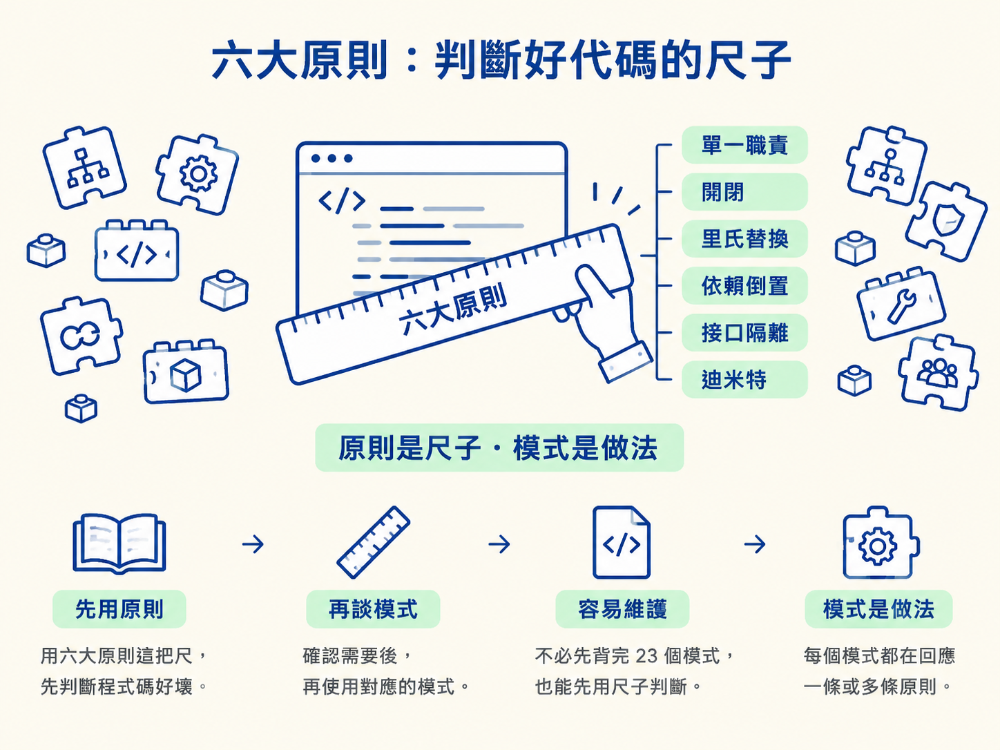
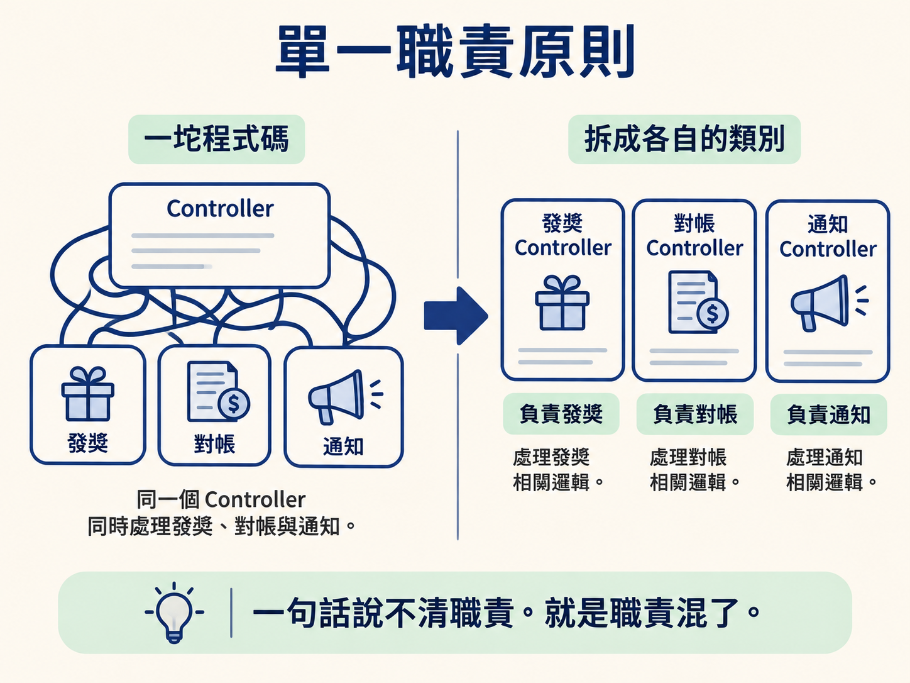
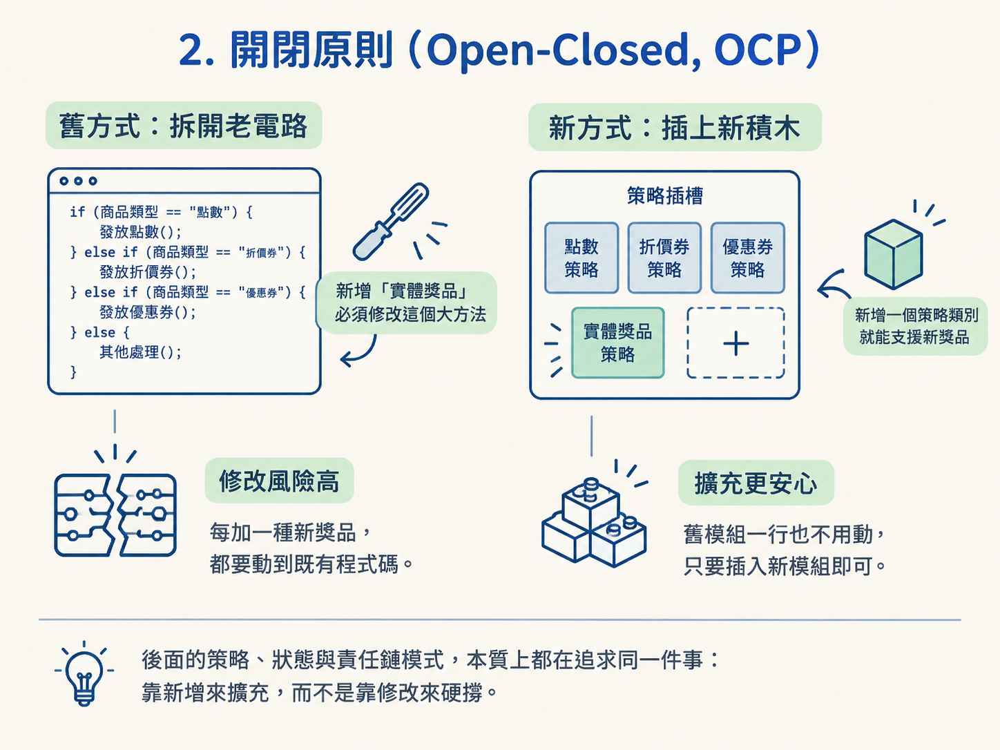
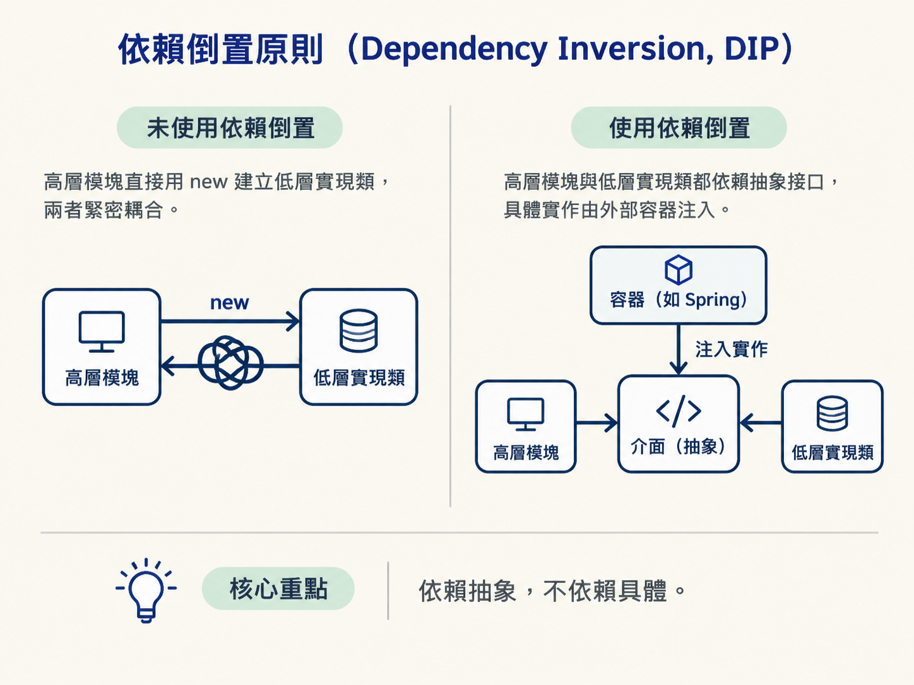
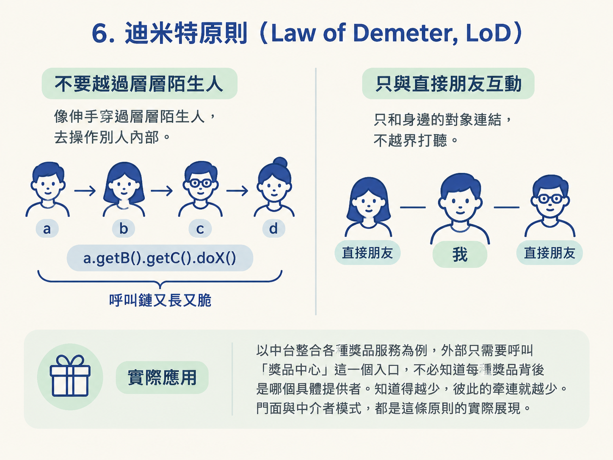

書本把六大原則放在 23 個設計模式之前，不是偶然。因為模式是「做法」，原則則像一把「尺」——每個模式，最後都在回應一條或多條原則。你不必先背完 23 個模式，也能先用這六把尺，看看一段程式碼是否容易維護。

先回想最有感的場景：一個類別塞了幾千行程式碼，所有業務都靠一大串 ifelse 分支撐著。你把它拆成策略或狀態之後，程式碼立刻比較好改、比較好測。這六條原則，就是用來說明「為什麼這樣重構會變好」的語言。
一個類別應該只有一個改變它的理由，也就是只負責一件事。最實用的判斷方式是：你能不能用一句話說清楚這個類別「負責什麼」？如果說著說著列出一長串工作，通常代表職責已經混在一起了。
反例就是那種「一坨程式碼」：同一個 Controller 同時處理發獎、對帳與通知。之後不管改哪項業務，都得動到這個大類別。重構時，應該讓每項業務邏輯回到自己的類別裡，各自負責一件事。

開閉原則的意思是：對擴充開放，對修改關閉。新增功能時，優先透過增加新類別來完成，而不是回頭修改穩定運作的舊程式碼。
可以這樣檢查：如果需求要增加一種新類型，你是不是得回到原本的方法裡，再塞一個判斷分支？如果答案是「要」，通常就代表程式碼還沒有符合開閉原則。
以發獎為例，原本可能用 ifelse 判斷商品類型；現在要加入「實體獎品」，就得修改那個大方法。改成策略模式後，新獎品只需要新增一個策略類別，舊程式碼一行也不用動。後面的策略、狀態與責任鏈模式，本質上都在追求同一件事：靠新增來擴充，而不是靠修改來硬撐。

凡是使用父類別或介面的地方，換成任一個子類別或實作，都不應該破壞原本的程式行為。
判斷時，可以問自己：這個子類別有沒有偷偷改掉父類別原先的約定？例如改變回傳值的意義，或在父類別不會出錯的情況下突然拋出例外。如果有，就代表它無法被無痛替換。
想像 Spring 容器裡的 bean 依賴某個介面：把快取實作從 Redis 換成本機版本時，呼叫端不應該因此崩潰。里氏替換原則，就是「實作可以替換，使用方式不用跟著改」的前提。
依賴倒置原則可以濃縮成一句話：依賴抽象，不依賴具體實作。高層模組不應該被低層模組的細節綁住；兩者都應該依賴抽象介面。
檢查方式很直接：你的類別裡，是不是直接寫了 new XxxImpl()？還是只依賴一個介面，讓具體實作由外部注入？後者通常更容易替換，也更容易測試。
最熟悉的例子就是 Spring 的依賴注入（DI）：業務程式碼依賴 UserRepository 介面，實際使用哪個實作由容器注入；測試時，也能換成 mock 實作。抽象工廠模式同樣是在幫助我們更換實作，而不用修改呼叫端。

客戶端不應該被迫依賴自己用不到的介面方法。一個又肥又大的介面，會逼所有實作類別補上一堆不需要的功能；最後不是留下空實作，就是拋出「不支援」例外。
判斷方法是：這個介面的每個方法，實作類別真的都用得到嗎？如果某些方法只能留空或直接拒絕，就表示介面可能切得太大。
解法是把大介面拆成幾個小介面，讓使用者需要什麼就依賴什麼。後面的適配器與門面等設計，都建立在介面邊界清楚的基礎上，否則所謂的統一入口反而會變成另一個巨型介面。
迪米特原則也稱為最少知道原則：一個物件只和自己的「直接朋友」打交道，不要越過朋友，直接操作朋友內部的其他物件。
看到這種程式碼，就要提高警覺：a.getB().getC().doX()。呼叫端像伸手穿過好幾個陌生人，去碰觸很遠的內部細節。中間任何一層結構改變，整條呼叫鏈都可能跟著斷掉。
以中台整合各種獎品服務為例，外部只需要呼叫「獎品中心」這一個入口，不必知道每種獎品背後是哪個具體提供者。知道得越少，彼此的牽連就越少。門面與中介者模式，都是這條原則的實際展現。

主要來源：《重學 Java 設計模式》「目錄」：六大原則列在全書 23 個模式之前，並作為貫穿各章、理解具體模式的判斷基準。後續每個模式的總結，都會回頭說明它符合哪些原則，以及相對付出的代價。